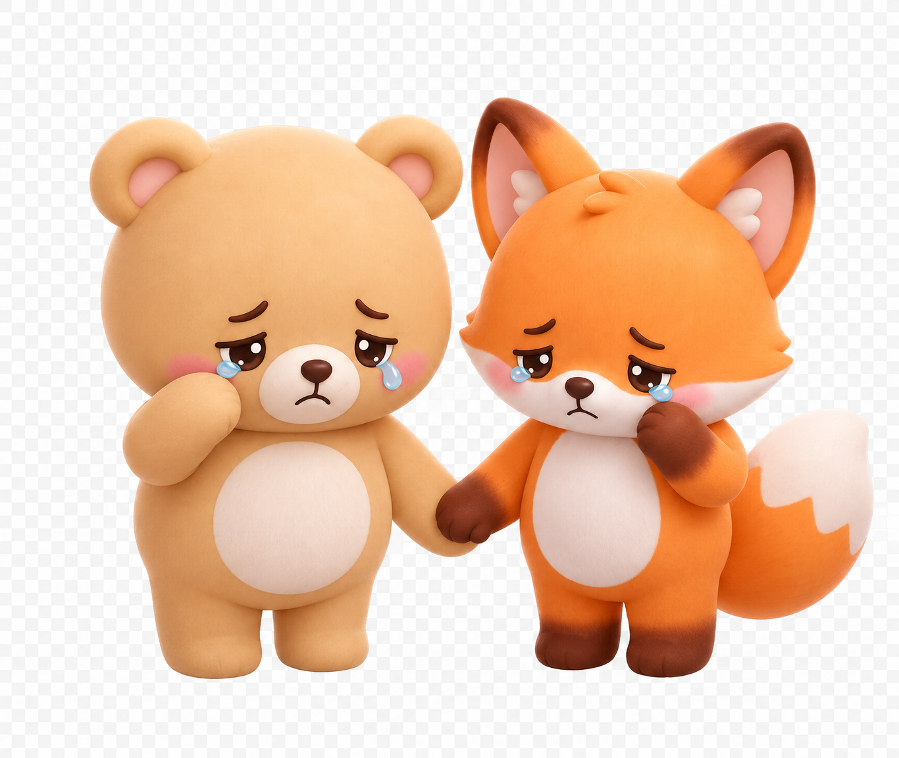
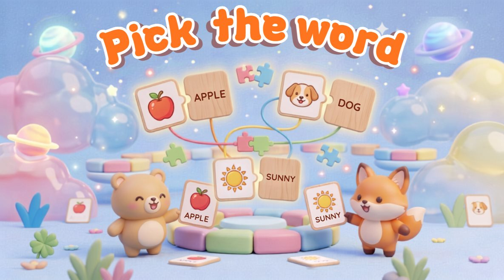
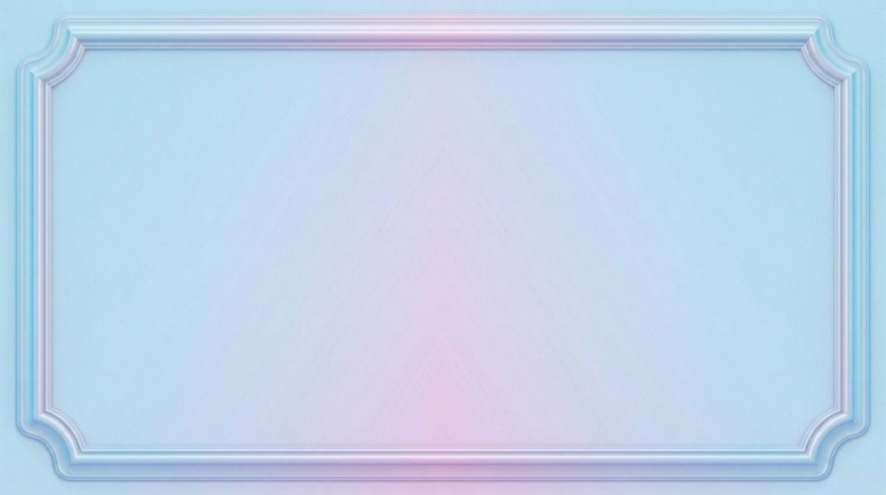
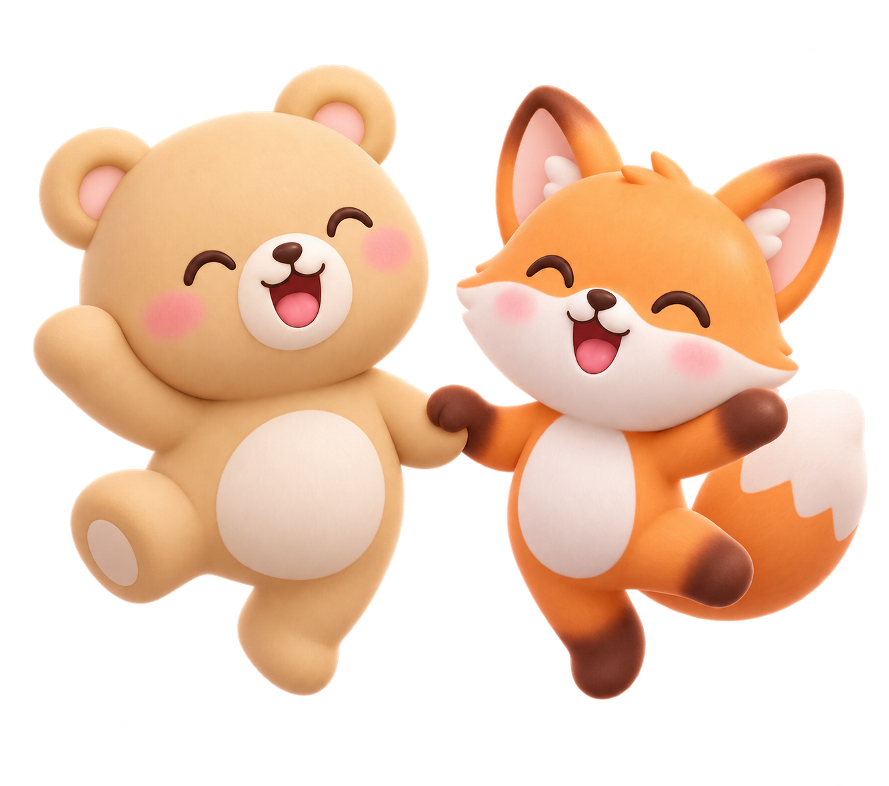

How to Play
학습 목표: 그림, 뜻, 소리를 보고 알맞은 영어 단어를 찾아보세요!
진행 방법
문제를 잘 보고 보기 중에서 정답을 골라요. 틀려도 괜찮아요! 한 문제에 최대 5번까지 도전할 수 있어요. (O/X 문제는 1번)
점수 받는 법
한 번에 맞힐수록 점수가 높아요. (첫 번째에 맞히면 10점!) 문제를 연달아 맞히면 연속 보너스 +3점도 받아요!
힌트
문제당 1번, 감점 없이 힌트를 볼 수 있어요.
10문제를 모두 풀면 최종 점수가 나와요!
Hint
게임을 종료할까요?

지금 나가면 풀던 문제가 사라져요.


원하는 주제를 선택하세요.
주제를 선택하세요.
0단어 선택됨
여기서 난이도를 선택하세요!
선택한 난이도: 중

게임 종료!
최종 점수
0
정답 개수
0/10
정답률
100%